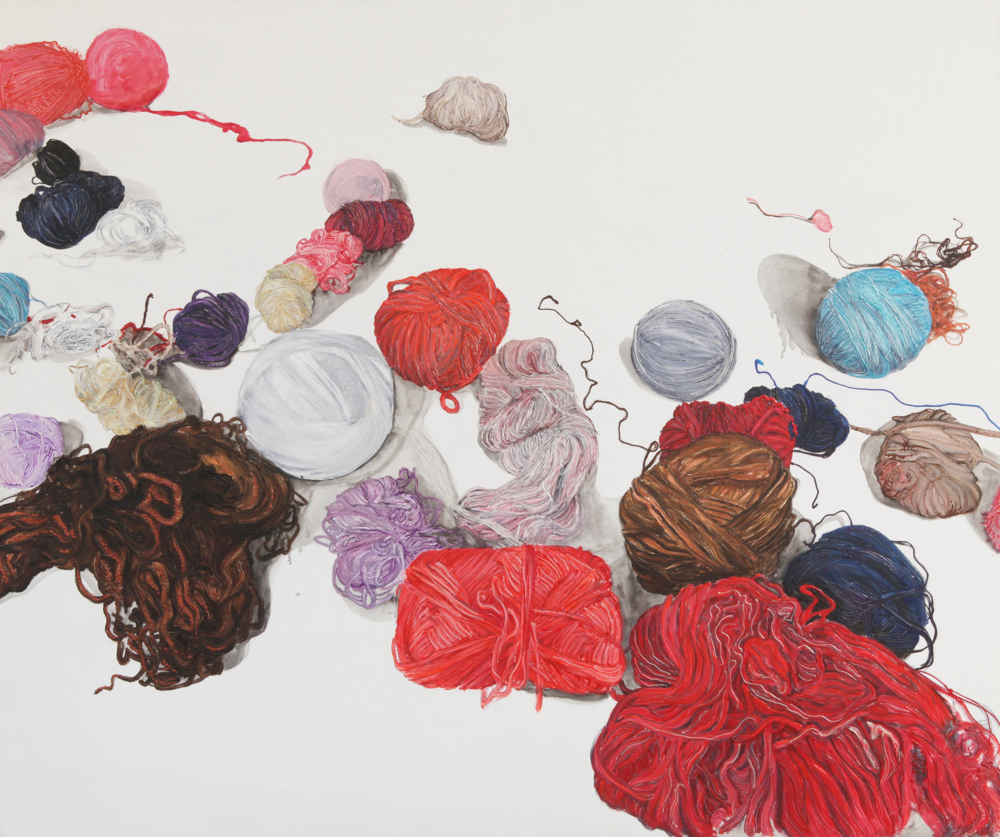
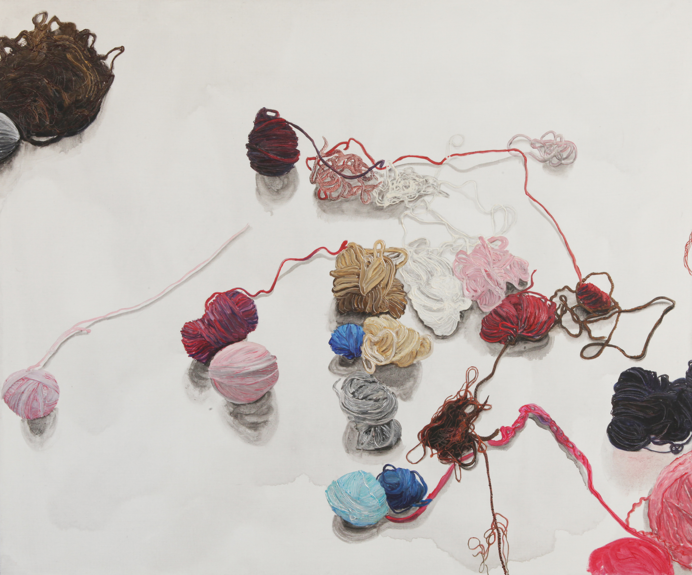

《毛线球》处理的不是柔软材料本身的温和感，而是柔软之物如何在缠绕、卷聚、牵引和堆积中获得一种结构上的重量。这个系列比《日记》更少叙事，更少日常切口，但在形式上更集中，也更容易把作品推向一种稳定的视觉语言。
如果说《日记》更接近日常经验的切片和压缩，那么《毛线球》更像把那种压强收束进一种更单纯、更持续的形式关系里。它适合成为作品档案中的第二条主系列，与《日记》并列，但气口不同。
Series Archive
这一系列比《日记》更收束、更集中。它通过缠绕、卷聚、牵引、承压和堆积，把柔软材料转成一种带重量的结构语言。
《毛线球》处理的不是柔软材料本身的温和感，而是柔软之物如何在缠绕、卷聚、牵引和堆积中获得一种结构上的重量。这个系列比《日记》更少叙事，更少日常切口，但在形式上更集中，也更容易把作品推向一种稳定的视觉语言。
如果说《日记》更接近日常经验的切片和压缩，那么《毛线球》更像把那种压强收束进一种更单纯、更持续的形式关系里。它适合成为作品档案中的第二条主系列，与《日记》并列，但气口不同。
1. 先保留结构最清楚的
优先选那些缠绕、卷聚与承压关系最明确的作品，不先选过渡态太强的。
2. 先保留形式最集中的
《毛线球》要比《日记》更收，所以首批应该先保留视觉上最不散、最能立住中心结构的作品。
3. 先保留气口差异
即使都在处理缠绕，也要保留不同的密度、力度和方向，避免 6 件作品像一件重复播放。








《日记》
更接近日常经验、心理错位与生活切片，图像叙事感更强。
《毛线球》
更接近形式收束、结构承压与材料关系，叙事更少，形式语言更集中。
档案位置
两条系列并列存在，但承担不同任务：一条从现实切口进入，一条从形式结构收束。